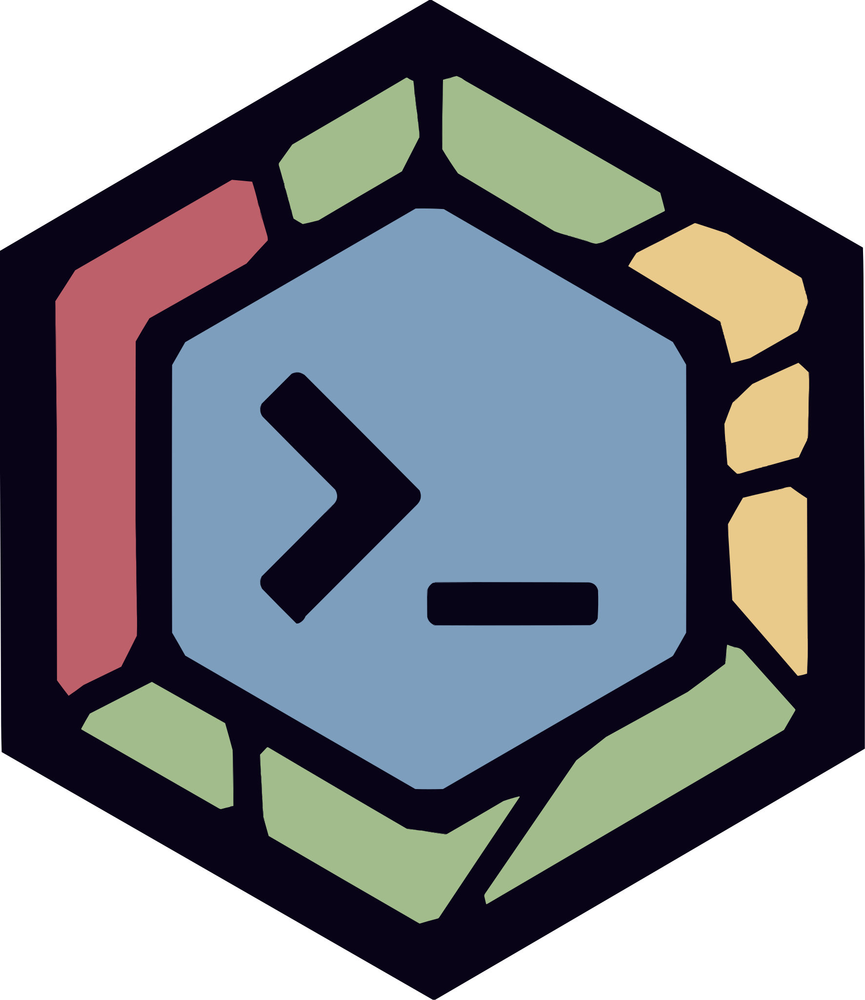
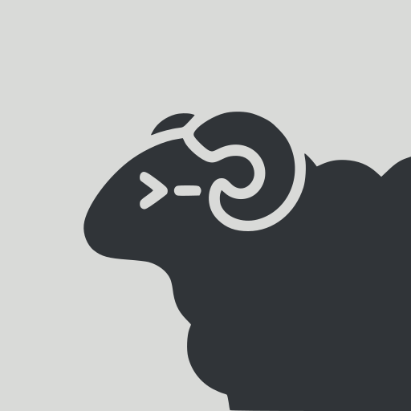
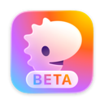

Set up your coding agents once.
One repo for everything your coding agents read, including the parts that never port: MCP servers, hooks and subagents. 16 harnesses, each in its own format.
curl -fsSL https://raw.githubusercontent.com/yourconscience/tackroom/main/scripts/install.sh | sh && tackroom setup
All 6 installed harnesses are in sync.Still checking harnesses, crons and machines.
- Claude Code✓ synced
- Codex✓ synced! needs sync
- OMP✓ synced
- Pi✓ synced
- Cursor✓ synced
- Gemini CLI✓ synced
- 6 harnesses in sync, nothing to sync3 skills, 6 roles, 1 MCP server, 2 hooks1 harness out of syncCodex needs it: 1 drifted.Sync
- 1 outside source pinned2 outside sources pinnedNo audit findings
- 1 in cooldownexample/lint-skills@6100a81 · 31h left of 72h
- 4 crons healthy
- Both machines on config 3f2a9c1tackroom 3.2.1 on studio and laptop
Works with 16 coding agents
Each gets your setup in its own format. The capability matrix shows what each one supports.
 Claude Code
Claude Code- Codex
- Factory Droid
- OMP
- OpenCode
 Pi
Pi- Qwen Code
 Cursor
Cursor Devin
Devin Gemini CLI
Gemini CLI GitHub Copilot CLI
GitHub Copilot CLI- Grok Build
- DeepSeek Harness
- Antigravity CLI
- Kimi Code
- Amp
Terminals
- tmux

zellij
Herdr- Tern

Rex
tmux and zellij each get a tackroom tmux or tackroom zellij workspace, Herdr gets a tackroom panel with tabs for skills, roles, MCP servers, hooks and crons, Tern a crons panel and a tackroom tern workspace, Rex a tackroom rex panel you toggle from any session. Each workspace and the Rex panel open tackroom dash, a live screen with the sync state and the scheduled jobs.
Outside skills are dependencies
A skill from someone else's repo is code your agents will run. tackroom pins it in tackroom.lock, audits it, and puts anything under 72 hours old in cooldown.
external_skills:
- name: agent-skills
url: https://github.com/acme/agent-skills
branch: main
commit: b09718b944a55af3ffc686d6914b7e77b5a77775
...
cooldowns:
...
- item: skill:lint-skills
ref: git:https://github.com/example/lint-skills@6100a8179fa54931e4930385f1b0aded4afac599
published_at: "2026-11-11T23:38:13Z"
time_source: git-commit-date
cooldown_until: "2026-11-14T23:38:13Z"
Show the whole file
# Managed by tackroom sync / tackroom skill update. Pins commits and materialized skill ownership. version: 1 external_skills: - name: agent-skills url: https://github.com/acme/agent-skills branch: main commit: b09718b944a55af3ffc686d6914b7e77b5a77775 materialized: - code-review - pr-shepherd cooldowns: - item: skill:agent-skills ref: git:https://github.com/acme/agent-skills@b09718b944a55af3ffc686d6914b7e77b5a77775 published_at: "2026-10-02T11:00:00Z" time_source: git-commit-date cooldown_until: "2026-10-05T11:00:00Z" - item: skill:lint-skills ref: git:https://github.com/example/lint-skills@6100a8179fa54931e4930385f1b0aded4afac599 published_at: "2026-11-11T23:38:13Z" time_source: git-commit-date cooldown_until: "2026-11-14T23:38:13Z"
-
✓pinned
b09718b$ tackroom status agent-skills ✓ b09718b https://github.com/acme/agent-skillsAgents see this commit of
acme/agent-skillsand nothing newer. Onlytackroom skill updatemoves the pin. -
!cooldown
41h of 72h$ tackroom status cooldown skill:lint-skills: git:https://github.com/example/lint-skills@6100a8179fa54931e4930385f1b0aded4afac599 published 2026-11-11T23:38:13Z (git-commit-date); cooldown ends 2026-11-14T23:38:13Z; override: tackroom sync --allow-fresh=skill:lint-skillsSync skips it and agents keep what they have. Wait, or skip the cooldown now with
tackroom sync --allow-fresh=skill:lint-skills. -
✓audit pass $ tackroom doctor ✓ external skill audit 1 skills scanned, no audit rule matched
Nothing to do.
-
!audit finding
agent-config-write$ tackroom doctor audit HIGH agent-config-write skills/pr-shepherd/scripts/setup-ci.sh cp ci-settings.json ~/.claude/settings.jsonReported, not blocked. Read it with
tackroom doctor auditand decide whether to keep the source. -
✗blocked
exfiltration$ tackroom status blocked skill:shell-kit: exfiltration in skills/shell-runner/scripts/report.sh; override: tackroom doctor audit accept skill:shell-kit exfiltration --reason "..."Sync skips it and any earlier pin stays. Wait for a fix upstream, or accept it with a reason:
tackroom doctor audit accept skill:shell-kit exfiltration --reason "..."
New exact npm and PyPI versions in MCP servers and Pi packages get the same cooldown. Your own skills, roles, hooks and MCP entries are reported, never blocked. Demo output, captured 2026-11-13. How it works
The first five minutes
One Go binary for macOS and Linux, on arm64 and x86-64.
-
Install
The install script (above), npm or Homebrew. All three fetch the same release from GitHub and check its checksum. The script puts the binary in
~/.local/binand ends with the command to run next. To read it before it runs, save it withcurl -fsSL -o install.sh https://raw.githubusercontent.com/yourconscience/tackroom/main/scripts/install.sh, readinstall.sh, then runsh install.sh.- npm
npm install -g tackroom- Homebrew
brew install yourconscience/tap/tackroom
-
Set up
tackroom setupasks nothing. It creates~/.agents, finds your agents, copies in what they already have, runs the first sync and prints a short summary. A file that differs from the shared copy is backed up before it is replaced.--reviewasks before each step instead. -
Sync
Writes each agent's native config from the repo. Run it again any time; it changes only what drifted, and skips what is in cooldown or blocked.
after adding three skill sources and one MCP server $ tackroom sync tackroom sync ✓ synced changes +2 skills, +1 mcp (claude, codex, pi) · +2 skills (omp) repo ✓ ~/.agents sources agent-skills ✓ b09718b https://github.com/acme/agent-skills ╭─────────┬──────────┬────────┬────────┬─────┬───────┬─────────┬──────────╮ │ harness │ state │ skills │ agents │ mcp │ hooks │ plugins │ packages │ ├─────────┼──────────┼────────┼────────┼─────┼───────┼─────────┼──────────┤ │ claude │ ✓ synced │ 3 │ 6 │ 1 │ - │ - │ - │ │ codex │ ✓ synced │ 3 │ 6 │ 1 │ - │ - │ - │ │ omp │ ✓ synced │ 3 │ 6 │ - │ - │ - │ - │ │ pi │ ✓ synced │ 3 │ 6 │ 1 │ - │ - │ - │ │ cursor │ ✓ synced │ 3 │ 6 │ - │ - │ - │ - │ │ gemini │ ✓ synced │ 3 │ 6 │ - │ - │ - │ - │ │ grok │ ✓ synced │ 3 │ 6 │ - │ - │ - │ - │ ╰─────────┴──────────┴────────┴────────┴─────┴───────┴─────────┴──────────╯ ... skipped 1 blocked item(s) and 1 item(s) in cooldown; see tackroom status
-
Check
tackroom viewopens the dashboard you work in: every agent's sync state, each outside source as pinned, in cooldown or blocked, and your scheduled jobs, on a desktop or a phone. From a shell,tackroom statusshows what is synced, in cooldown or blocked andtackroom doctorchecks skills, roles, pins, audits and hooks.$ tackroom status (excerpt, demo home) tackroom status ✓ synced repo ✓ ~/.agents sources agent-skills ✓ b09718b https://github.com/acme/agent-skills ... ╭─────────┬──────────┬────────┬────────┬─────┬───────┬─────────┬──────────╮ │ harness │ state │ skills │ agents │ mcp │ hooks │ plugins │ packages │ ├─────────┼──────────┼────────┼────────┼─────┼───────┼─────────┼──────────┤ │ claude │ ✓ synced │ 3 │ 6 │ 1 │ - │ - │ - │ │ codex │ ✓ synced │ 3 │ 6 │ 1 │ - │ - │ - │ ... ╰─────────┴──────────┴────────┴────────┴─────┴───────┴─────────┴──────────╯ in cooldown or blocked (skipped by sync) blocked skill:shell-kit: exfiltration in skills/shell-runner/scripts/report.sh; override: tackroom doctor audit accept skill:shell-kit exfiltration --reason "..." cooldown skill:lint-skills: git:https://github.com/example/lint-skills@6100a8179fa54931e4930385f1b0aded4afac599 published 2026-11-11T23:38:13Z (git-commit-date); cooldown ends 2026-11-14T23:38:13Z; override: tackroom sync --allow-fresh=skill:lint-skills
Next to similar tools
skillshare, rulesync, ruler and openskills cover some of the same ground. Three things set tackroom apart.
- One lockfile for every machine
- External skills are pinned in
tackroom.lock, which lives in your user-level config repo and is shared by every machine. - A 72-hour cooldown
- New pins and new exact package versions wait 72 hours. An item in cooldown is skipped until the cooldown ends or you pass
--allow-fresh. - An audit gate
- An unaccepted critical finding blocks the update, and the previous pin stays.
Why the name
In a tack room each horse's gear hangs on its own peg under its own nameplate. tackroom keeps one rail in ~/.agents and fits each agent's gear to its own format. More on the design
Before you install
Will it overwrite what my agents already have?
Not without a backup. setup copies existing skills, MCP servers and roles into ~/.agents, and sync only touches entries tackroom manages. A file that differs from the shared copy is moved to a backup before it is replaced, and tackroom restore puts it back. Run tackroom setup --review to decide each item yourself.
Do I have to use every surface?
No. Start with skills. MCP servers, hooks and roles are separate sections of tackroom.yaml, and an agent you switch off is left alone.
How do I get the same setup on another machine?
~/.agents is a git repo. Push it to a private remote, then on the next machine run tackroom setup --from <repository url>: it clones the repo into ~/.agents and sets up from it. setup also installs a job that pulls and syncs every 15 minutes; --no-cron skips it.
Can someone use one of my skills without tackroom?
Yes. Any skill in your repo installs with npx skills add you/agents -s name --copy.